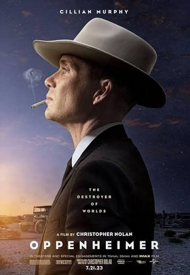

Movies bring stories, emotions, and entertainment to life, offering something for everyone to enjoy. Music adds rhythm and emotion, making every moment more memorable and enjoyable.

J. Robert Oppenheimer was an American theoretical physicist who led the scientific effort of the Manhattan Project during World War II. He is widely known as the “father of the atomic bomb” and later became a prominent voice in debates about nuclear weapons.
How to Train Your Dragon is an animated adventure film about a young Viking named Hiccup who befriends a dragon named Toothless. Together, they discover that humans and dragons can live peacefully while facing challenges that test their friendship and courage.
Enola Holmes 3 continues the adventures of Enola Holmes, the clever and independent younger sister of Sherlock Holmes. In this third installment, Enola takes on a new mystery that challenges her intelligence, courage, and detective skills.

HIT: The Second Case is a Telugu crime thriller starring Adivi Sesh as a police officer investigating a brutal murder case. The movie follows his intense investigation as he uncovers disturbing clues and faces unexpected twists.
.jpeg)
Lilo & Stitch is a heartwarming story about a young Hawaiian girl named Lilo who adopts a mischievous alien named Stitch. Together, they experience fun adventures and discover the true meaning of family, love, and friendship.